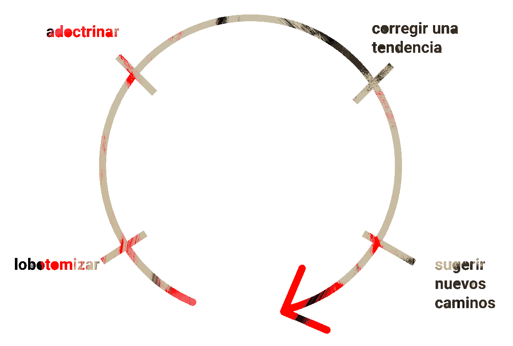
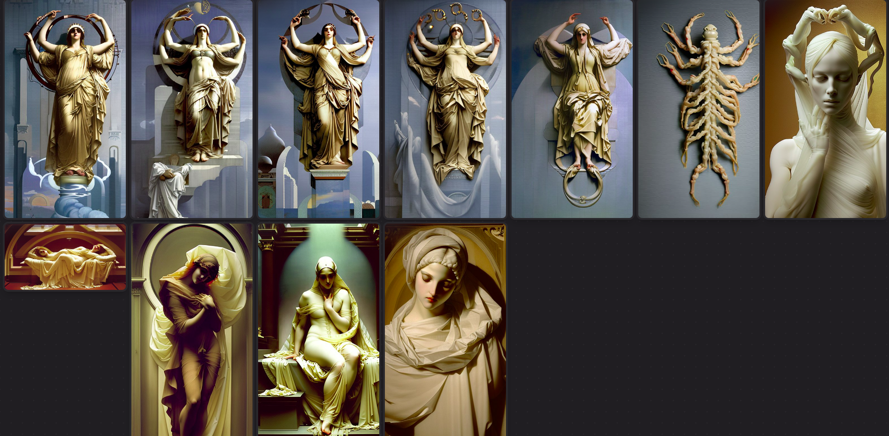
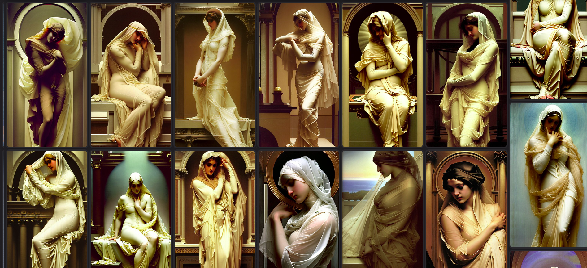
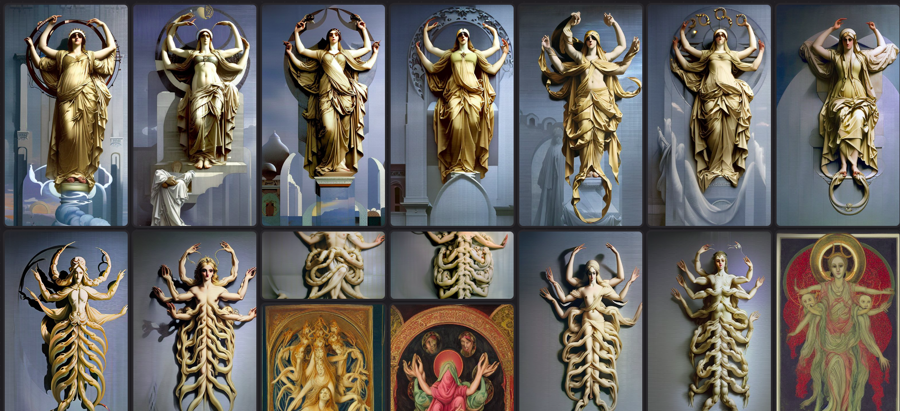

Es domingo. Abrí bitwig y conecté mi push 2. En paralelo me puse a jugar con un finetuneo nuevo de un modelo de machine learning para generación de imágenes (llamado luna diffusion, basado en sd1.5). El finetuneo (finetuning en tecnicoso) es el proceso de agarrar una red neuronal artificial y darle una dirección más específica agregándole capas al final de la red. Con esto se le puede "enseñar" conceptos nuevos, o reforzar conceptos específicos: lobotomizar, adoctrinar, corregir una tendencia, sugerir nuevos caminos (en orden).
Buttery smooth interpolation

Iba generando imágenes, lo que implicaba escribir oraciones(prompts) más o menos cortas y componiendo pequeños arreglos, de minuto y medio por ahí. Esa duración es básicamente mi zona de confort para la cuestión sonora actualmente. Cuando empecé era más bien diez segundos. No soy de las personas que escriben prompts largas; prefiero usar palabras cargadas, repeticiones, incoherencias y ver cómo alucina el modelo.
En paralelo
cyclical, the veiled head of the divine being, by Frederick Leighton
cyclical time, the completely veiled VEILED being, cyclical, by Frederick Leighton
cyclical time, the completely veiled VEILED being with four arms and eight arms, cyclical, by Frederick Leighton
completely veiled VEILED being with four arms and eight arms, cyclical
completely veiled VEILED four arms and eight arms, cyclical
completely veiled being with four arms and eight arms, cyclical, by Frederick Leighton
completely veiled being with four arms and eight arms, cyclical, sun and moon, by Frederick Leighton
En paralelo
Sabía que este modelo estaba finetuneado para hacer imágenes "etéreas", así que quería ver cómo manejaba a Leighton. Rápidamente me aburrí de lo hegemónico del resultado, y terminé pensando en formas de producir los errores que me gustan más: demasiados brazos, articulaciones dobladas de formas en que no debería, simetrías circulares, íconos religiosos.
Selección final de imágenes:

Procesos:


En paralelo
me gusta sentir el ruido soplándome en el oido.
Con mis auriculares se vuelve íntimo.
ts
ts
ts
no termina de formarse la palabra, o hay falta de señal o hay un exceso de información. en la comunicación, el cero pegó la vuelta sobre sí mismo.
Lo siento así. rompo de a capas, apilando filtros y modificadores por arriba de los instrumentos digitales, viendo qué emerge.
Vengo pensando también en lo que se rompe y lo que se arma entre lo roto. Este mes y hace unos diez años. La imagen que pienso es la jungla creciendo entre las ruinas de la catedral. Me imagino los múltiples brazos moviendose entre mis sabánas y arriba de la mesa de experimentos.
Empecé el armado basado en un estudio que había hecho hace unos meses de la sonoridad de arca en su disco homónimo. Es el siguiente:
Saqué los instrumentos que ya no me gustaban y empecé a romper el resto moviendo mi atención por distintas partes de la imagen.
El pecho.
Los dedos y los brazos.
Las tetas.
La cabeza.